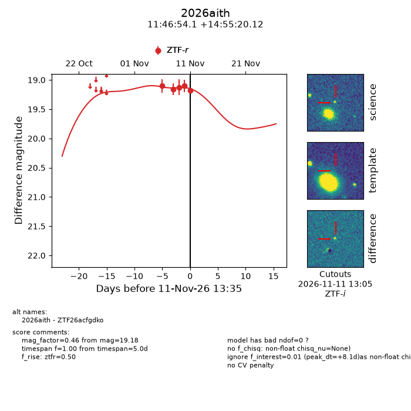
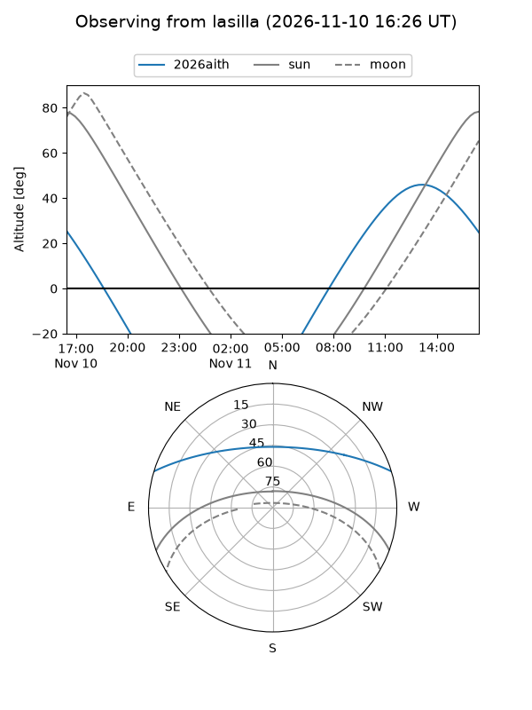
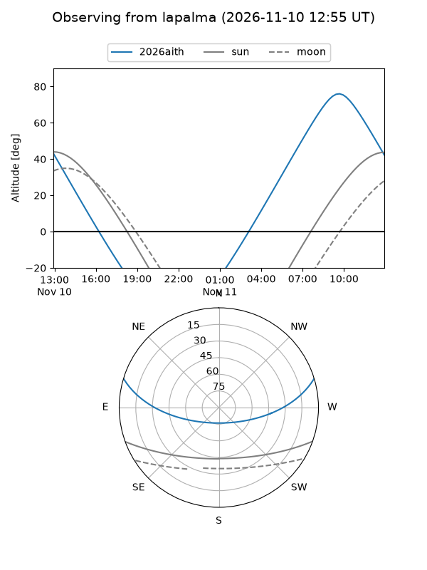
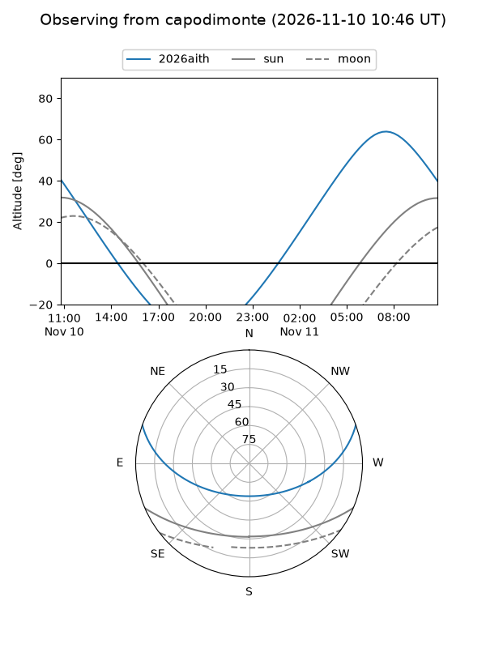
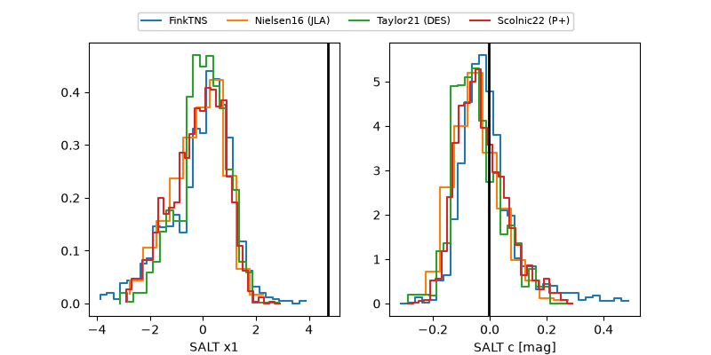

2026aith
Target 2026aith at 2026-11-11 13:37
Aliases and brokers:
FINK-ZTF: ztf.fink-portal.org/ZTF26acfgdko
Lasair-ZTF: lasair-ztf.lsst.ac.uk/objects/ZTF26acfgdko
ALeRCE-ZTF: alerce.online/object/ZTF26acfgdko
YSE-PZ: ziggy.ucolick.org/yse/transient_detail/2026aith
TNS name: wis-tns.org/object/2026aith
Direct TNS query: direct search
alt names
ZTF26acfgdko (ztf,fink_ztf)
2026aith (tns,yse)
Coordinates:
equatorial (ra, dec) = 176.7252,+14.92226
equatorial (HMS+DMS) = 11:46:54.05,+14:55:20.12
galactic (l, b) = (248.7897,+70.65172)
Flags:
peak dt: +8.1
Photometry:
last ztfr=19.18
5 ztfr detections
Lightcurve

Visibility



Additional plots
